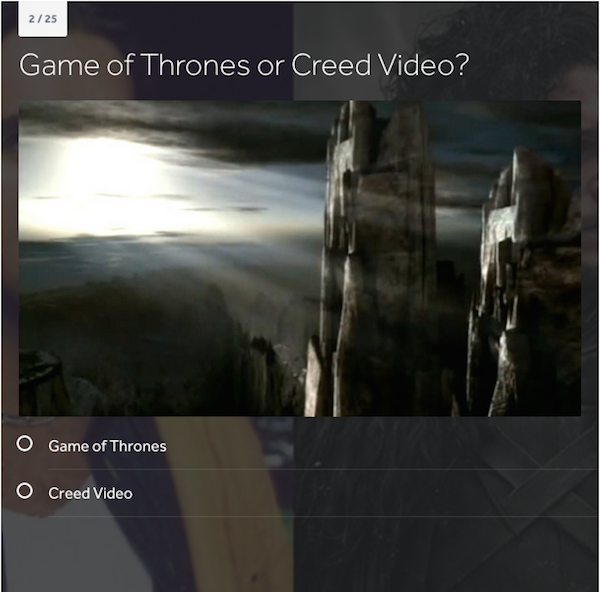
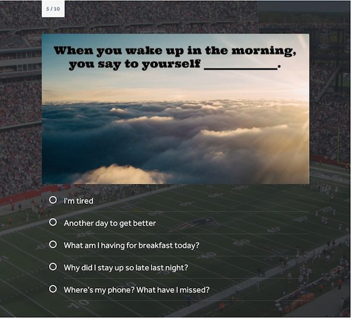
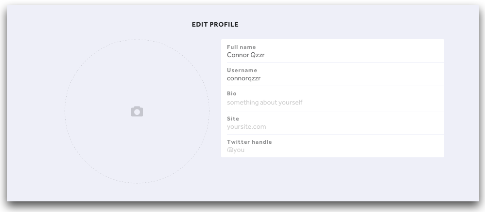
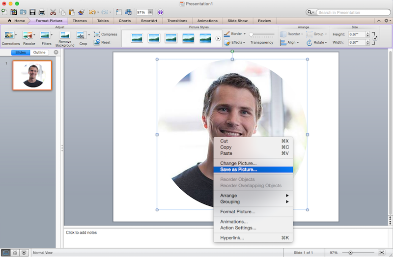

-
How Quizzes Pump Power Into Your SEO
Looking for just the right thing to send your SEO into Beast Mode?

A while back, a good friend of ours, Mike Barnes from SEO-Alien, did a webinar on the virality of quizzes. In the webinar (included below), Mike shows how you can use quizzes to beef up your positioning on search engines.
Marketing professionals so often try to crack the Google code and hack their way into the top search results, when all that really needs to be done is to concentrate on producing what we know Google wants.
Google smiles on these three aspects when determining a link’s value (and ultimately, where it will end up on the results page):
SERP (Search Engine Results Page)
Let’s call this our baseline. In other words, where is your page currently? It goes without saying that your point of origin will ultimately affect your ability to reach a set destination. This is where everything else you know about SEO comes in handy, so don’t throw out your other techniques in favor of absolute quiz adoption.
CTR (Click-Through Rate)
Search engines closely track what people are clicking on, so it makes sense that they would use this to determine the best options to serve up when you enter a query. Since quizzes just ooze clickability (find the data here if you won’t take our word for it), you’ll naturally have a leg up on other content types. As more people click your link, you’ll have a better chance at climbing the ranks.
TOS (Time On Site)
Yes, Google can tell how long you’re on a site, and uses this information heavily when assigning a page’s value. If you’re only on a page for 10 seconds, Google is going to assume that the page was of little worth to you. As with CTR, quizzes reign supreme; the average quiz engages a reader for nearly two and a half minutes. There could be many reasons quizzes have this effect, but among them are the decreased ability to skim or skip content and the captivation generated when waiting for a desired result.
With these three considerations in your pocket, you’re poised to ride the quiz train all the way to the top of the ranks. For more detail on what makes quizzes so insanely useful to have in your content strategy, download our eBook.
You can watch the webinar or check out the slides below, and head over to SEO Alien for more tips on how to improve your SEO.
-
Cold Calling Sucks: How to Create Audiences that Want to Hear From You With Quizzes
I learned about a secret language today.
Dr. Scott Baird, founder of Griffin Hill, calls it the “hidden language of persuasion.” He said that a fundamental part of this language is that it is primarily about the benefits that will make other people’s lives better off.
Our Chief Qwizard, Owen Fuller, teamed up with Dr. Baird for a webinar about how to create audiences that you can then speak to by using quizzes. The also explained the process of closing as many of those leads as possible by using this hidden language.
When new leads come in, our impulse is to immediately start yapping about our features. But by using the hidden language of persuasion, we will speak to the benefits that potential customers can look forward to, and that will put us in a position to only talk about things they care about.
You can watch the recording of the webinar below, and you can learn more about Griffin Hill’s Integrity Sales System on their website.
And here is the slide deck that Owen and Dr. Baird used during the presentation:
-
Augmenting Your Questions With the “Description” Feature
A common question we get from people is, “What can I do with the ‘Description’ underneath the question title when I’m making a quiz?”
To see what I’m talking about, take a look at the picture below:

It’s a fun question to answer, because this might be my favorite feature in the quiz maker. I’m especially fond of uploading a picture into this section and asking a question about that image.
For instance, check out this question from this “Can you name these classic mobile phones?” quiz from TechRadar:

They uploaded an image of a classic mobile phone, and the goal of the question is to see if people can name the model.
(Unfortunately on this question, “The Zack Morris Saved by the Bell phone” isn’t listed as an answer option.)
Pretty simple, right?
And here’s another example from CollegeHumor’s “Game of Thrones Scene or Creed Music Video?” quiz:

This quiz is so beautifully simple, and it’s everything you want out of a quiz. It’s visually appealing, easy-to-consume, and humorous.
Another way you can use the “Description” feature on the question title is to upload an image that contains your question. That way, you can use your own fonts and colors if you’d like. Here’s a question from Fanzz’s “Which New England Patriot are you?” quiz:

Thank goodness for our brilliant users who continue to amaze us with the creative ways they use Qzzr. If you have any other ideas for how to use this or any other feature on Qzzr, please let us know.
-
Using Videos and Quizzes to Make Beautiful Interactive Content
Last year, Demand Metric conducted a study about the state of content marketing. Here are some of the key findings*:
- 58% of the study participants stated that “content doesn’t create enough opportunities for interaction and engagement”
- Interactive content generates conversions moderately or very well 70% of the time, compared to just 35% for passive content
- 93% of study participants believe interactive content is effective at educating buyers
- 88% of study participants said interactive content differentiates them from their competitors
Interactive content for the win, right? Well, in spite of these numbers, just 25% of the study participants rated their content as slightly or moderately interactive. It’s as if they know how powerful interactive content is, but they haven’t quite figured out how to make their own.
With that in mind, we teamed up with our friends at ThingLink for a webinar about two types of interactive content: videos and quizzes. Our Chief Qwizard, Owen Fuller, was joined by Alicia Reich, ThingLink’s Director of Strategic Marketing and Partnerships, and they discussed the ways interactive videos and quizzes can be used to drive engagement and revenue.
As an example of how interactive videos and quizzes can be used together, check out the video below. It’s an annotated version of that First Kiss video that went viral last year, and 13 seconds into it, a tag appears asking, “What is your kissing score?” If you click on it, out pops a quiz where you can find out for yourself.
Pretty awesome, right? And there are 17 other tags that appear throughout the video, transforming the video into an interactive masterpiece.
For more information on why people are responding to this type of content, watch the recording below.
And here’s the slide deck that they used during the presentation:
* ion interactive, which sponsored the study, created a white paper that details all of their findings. The white paper, titled “Enhancing the Buyer’s Journey: Benchmarks for Content & The Buyer’s Journey,” can be found here.
-
How to Change Your Profile Picture on Qzzr
One of the best things about making a quiz on Qzzr is the ability to make it yours. You can customize it with your own images and colors, and you can get as creative as you want with the questions you create.
You can also add a profile picture that will show up at the bottom of your quiz. By default, you will get a generic profile picture that will look something like this:

That’s not the worst thing in the world, but we know you’d probably rather see your own face or logo in that space. For instance, if you’re espnW, it makes much more sense to have this image show up on the start page of your quiz:
To set your profile picture, log in to your account, and then click on that little circle in the top right corner. If you’ve never changed your profile picture, that circle will have your initials.

That will bring up a dropdown menu, and the first item on the list will be “Edit profile.”

Once you click on “Edit profile,” it will take you to a page where you can edit your name, username, bio, site, and Twitter handle. You can add your profile picture by clicking on the camera icon.

Once you click on it, you can upload a picture of your choosing. It will upload with your new picture, and then you just have to hit “SAVE CHANGES” in the top right corner.

Some helpful tips about choosing your profile picture
Keep in mind that this will show up at the bottom of your quiz. It’s a tiny but important piece of real estate, so you will want it to look great.
It will show up as a perfect circle, so try to use images with even dimensions. If you want to see how your image will look as a circle, I found a quick and dirty way to figure that out. Just open up PowerPoint, and then drag your image onto one of the slides.

While your image is selected, click on the down arrow next to the “Crop” button, and that will bring up a dropdown menu. From the list of options, hover over “Mask to Shape,” then go to “Basic Shapes,” and then select the oval.

Then, you can right click on the updated image and click on “Save as Picture.”

You can then upload this as your new profile picture in Qzzr by completing the steps laid out above.